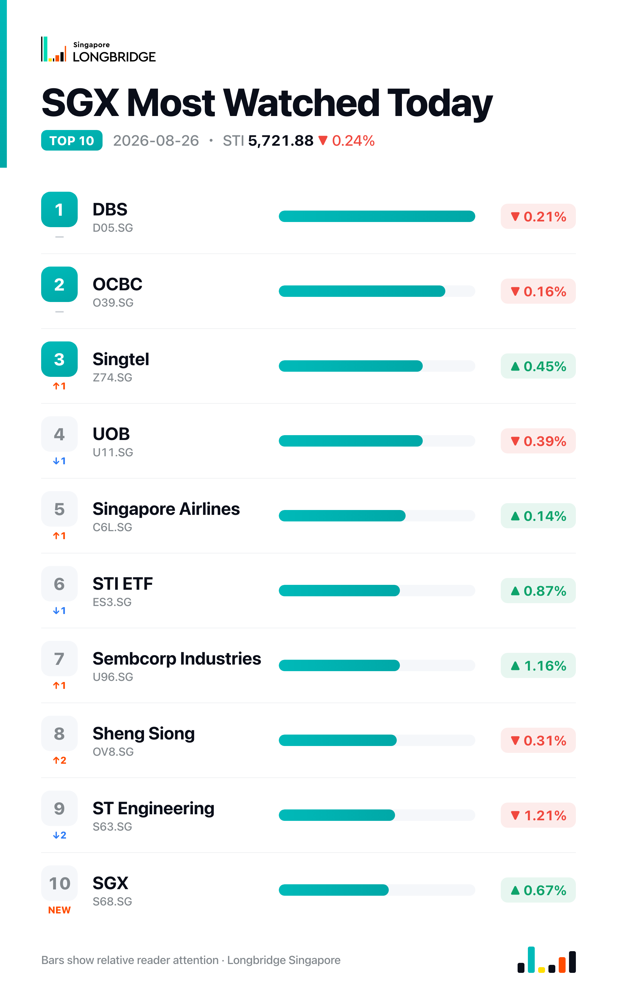

STI Slips 0.24% to 5,721.88 as Breadth Turns Negative; Sembcorp Rises, DFI Retail Leads Declines
The Straits Times Index closed at 5,721.88 on Wednesday, down 13.80 points, or 0.24%, after touching an early high of 5,745.23 — above Tuesday's 5,735.68 close — then reversing through the session to a low of 5,710.40. Breadth turned negative: 17 of the benchmark's 30 constituents declined against 10 advancers and 3 unchanged, a reversal from Tuesday's advance-led 17-9-4 split.
Wednesday's pullback unwound much of Tuesday's gain without a single catalyst driving the move. All three local banks eased in step — DBS (-0.21%), OCBC (-0.16%) and UOB (-0.39%) — a second straight session of synchronized bank moves, this time lower after Tuesday's uniform advance. Property and REIT-linked counters were broadly softer too, led down by Jardine Matheson (-2.01%) and Hongkong Land (-1.92%), while gains in Sembcorp Industries, Seatrium and SGX were not enough to offset the pullback elsewhere.
Session Movers
Sembcorp Industries (U96.SG, +1.16%) was the index's best performer, extending a run tied to Singapore's rising electricity tariffs, which have put utility and energy-infrastructure names including Sembcorp in focus for their pricing-power upside. The counter is also digesting its still-preliminary potential IPO of an Indian renewable energy unit and continued Buy calls from CGS International and DBS following an H1 update of higher sales but sharply lower earnings alongside a raised interim dividend. Consensus rates the stock Buy with a S$6.53 target, implying about 6.7% upside.
SGX (S68.SG, +0.67%) advanced as the market continued to digest July's securities turnover data — a 37% year-on-year jump to S$46.2 billion, with daily average value above S$2 billion for a sixth straight month — alongside assets under management climbing to S$1.19 trillion. OCBC's £1 billion covered-bond listing on the exchange, priced Aug. 20 and due to list this week, adds to that activity narrative. Consensus rates the stock Hold with a S$24.15 target, implying about 5.5% downside, after the shares traded near a 10-year-high 38.86 times earnings.
ST Engineering (S63.SG, -1.21%) was among the session's weaker constituents, continuing to give back part of the gain from its Aug. 13 H1 results, which showed revenue up 8.7% to S$6.43 billion and a solid order book including a UK defense contract, even as net income excluding one-off items fell 85.1% to S$59.9 million on margin compression. Phillip Securities and DBS have both reiterated Buy ratings since the results, at S$13.00 and S$12.40 targets respectively, without halting the slide.
DFI Retail (D01.SG, -2.47%) was the session's weakest constituent, with no fresh disclosure on the day itself. The stock has been building out its GNC partnership through August, having been named the wellness retailer's exclusive wholesaler, distributor and franchisee across Singapore, Hong Kong and Macau — a deal that followed a court win securing GNC's store-lease rights against Ron Sim's LAC — while also refreshing its board on Aug. 17 with the appointment of Alia Gogi as an independent non-executive director. Consensus still rates the stock Strong Buy, with a S$5.04 target implying about 42% upside.

One point worth noting
Property counters split sharply within the same session: City Developments edged up 0.48% while Hongkong Land, Jardine Matheson and UOL each fell more than 1.8% — a reversal from Friday, Aug. 21, when all four moved higher together. It underscores that this week's softer tone in banks and REITs has not been uniform across rate-sensitive, property-linked names, even as Sembcorp Industries and Seatrium held up near the top of the leaderboard.
This recap is for informational purposes only and does not constitute investment advice.